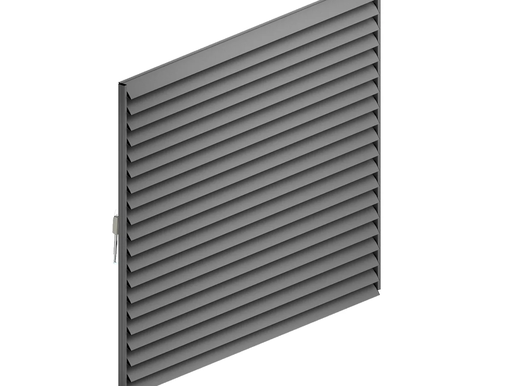

Sunbreaker 210 Rotary · pokretne lamele
Lamele se zakreću za 90° električnim ili ručnim pogonom, pa količinu svjetla prilagođavate dobu dana i vremenu. Lamela tipa A namijenjena je vodoravnim površinama, a tip B vodoravnim i okomitim. Sustav se postavlja na vanjsku nosivu konstrukciju kao vodoravna ili okomita stijena ili kao krovna verzija.
- IzvedbaPokretne lamele, zakret 0–90°
- Maks. mjere4,0 × 6,02 m (š × v), jedan panel
- PogonElektrični (linearni motor) ili ručni
- UgradnjaZid vodoravno ili okomito, krov
- VjetarRazred 6 prema EN 13659, razmak nosača do 4 m